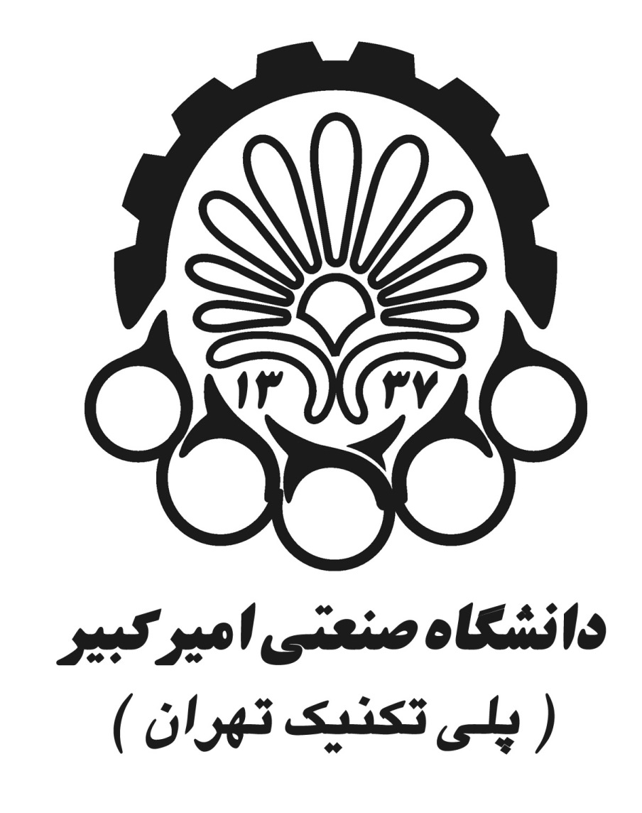
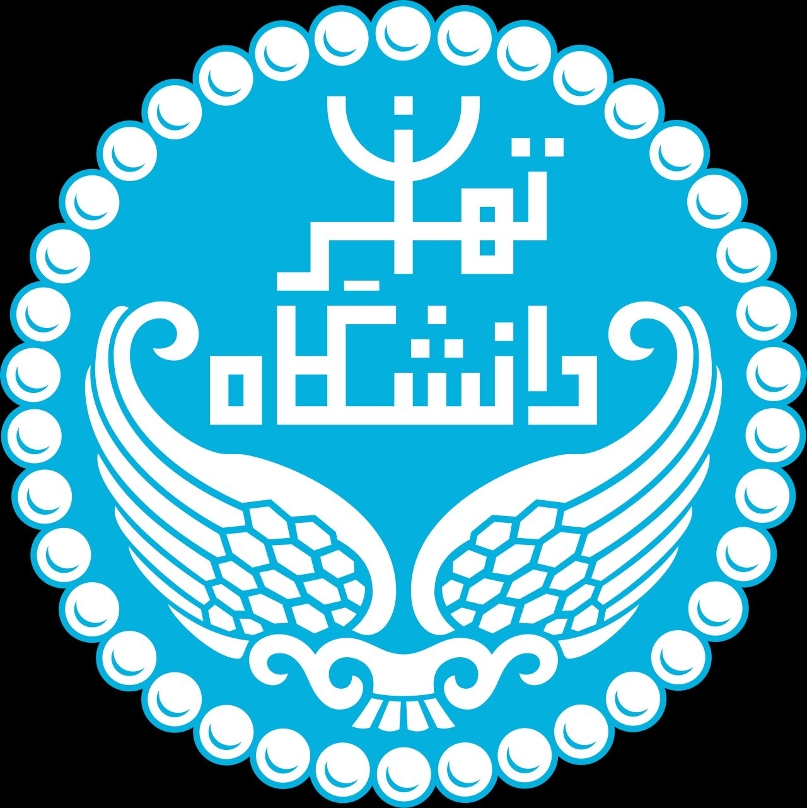
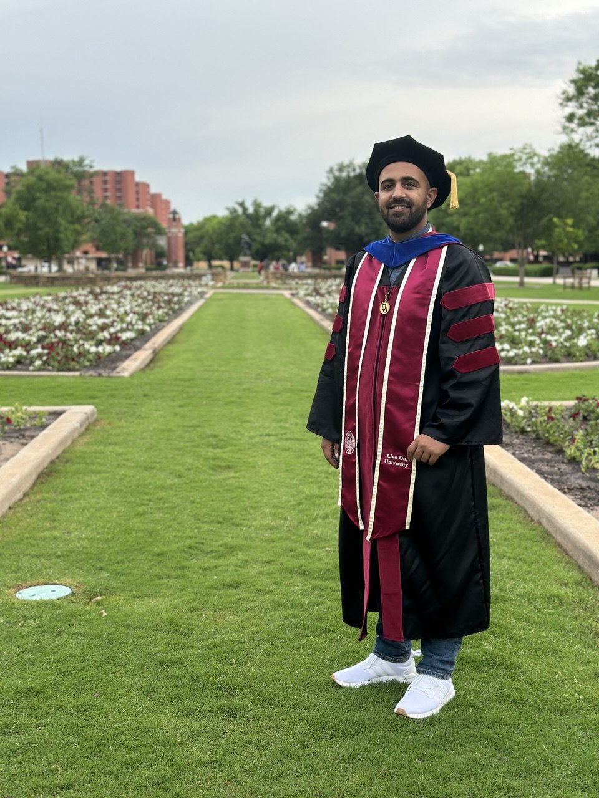
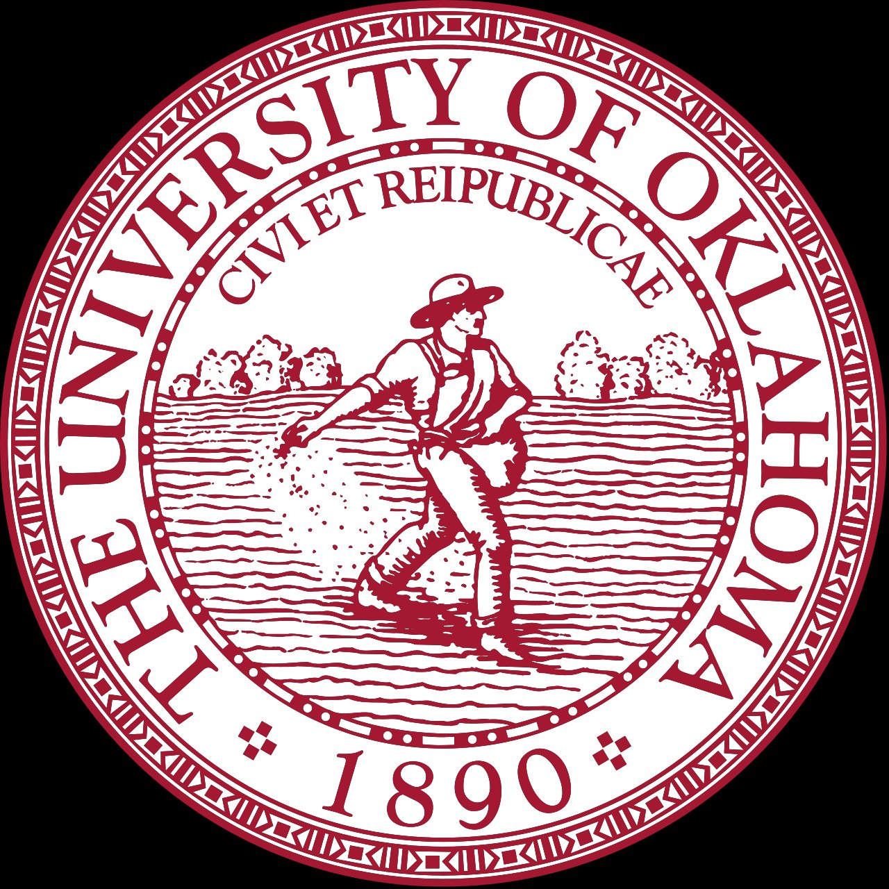
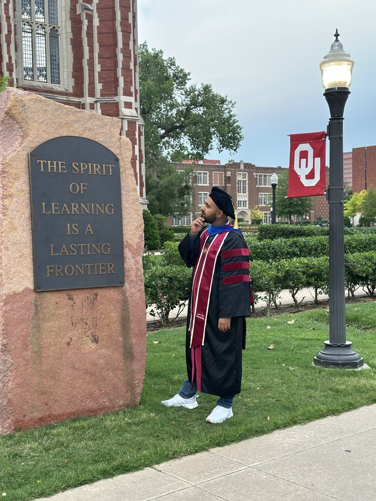
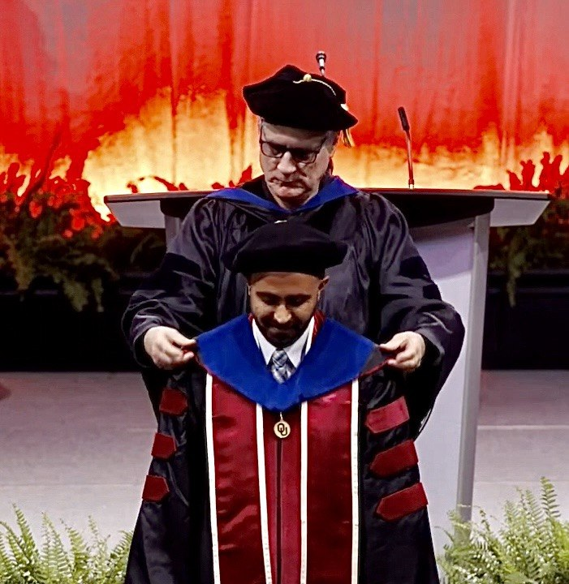
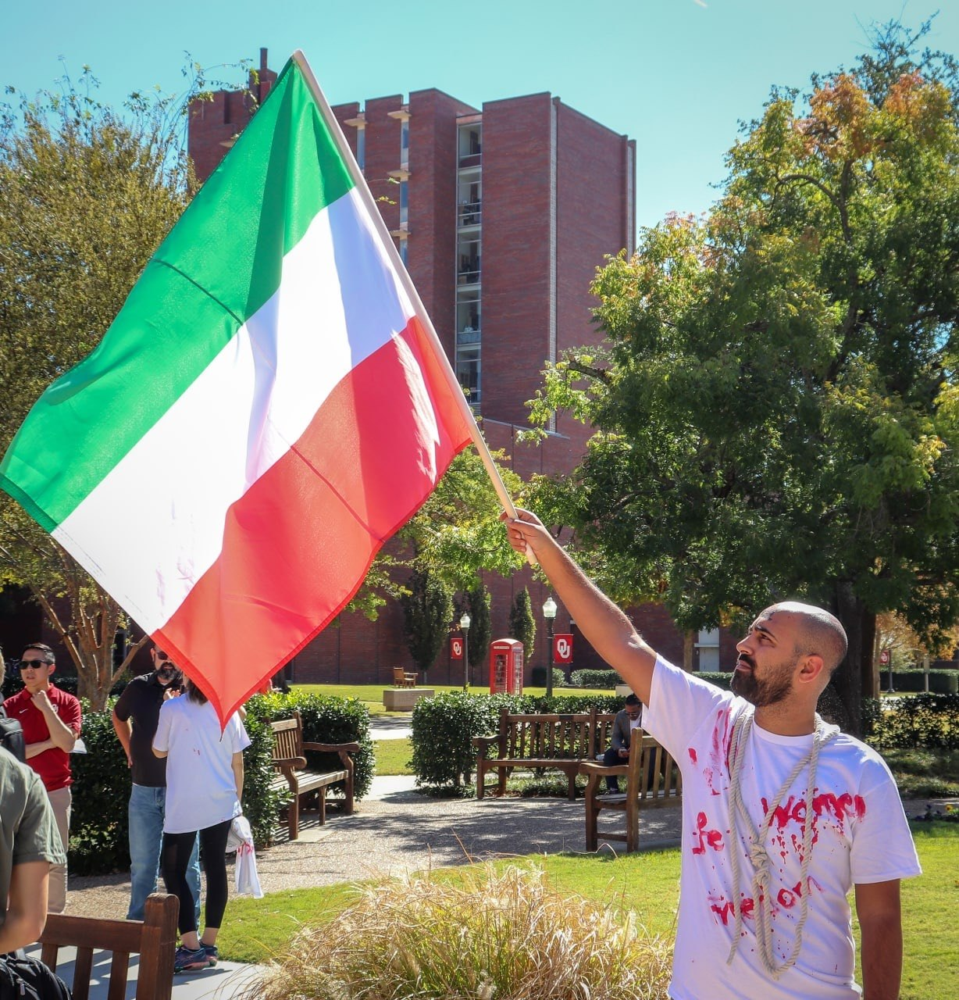
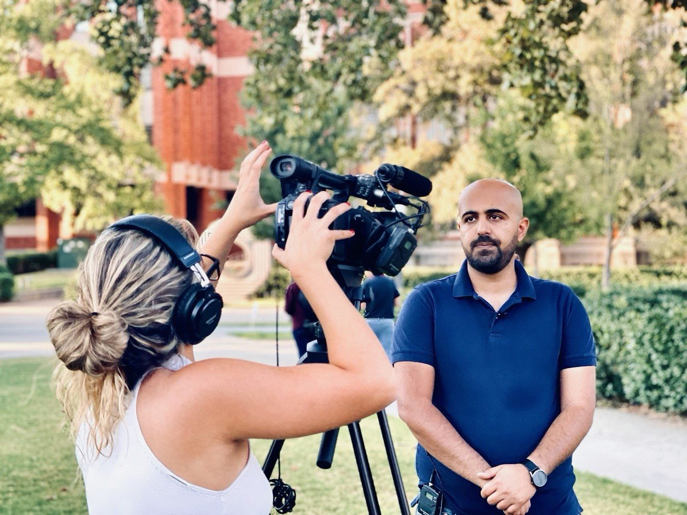
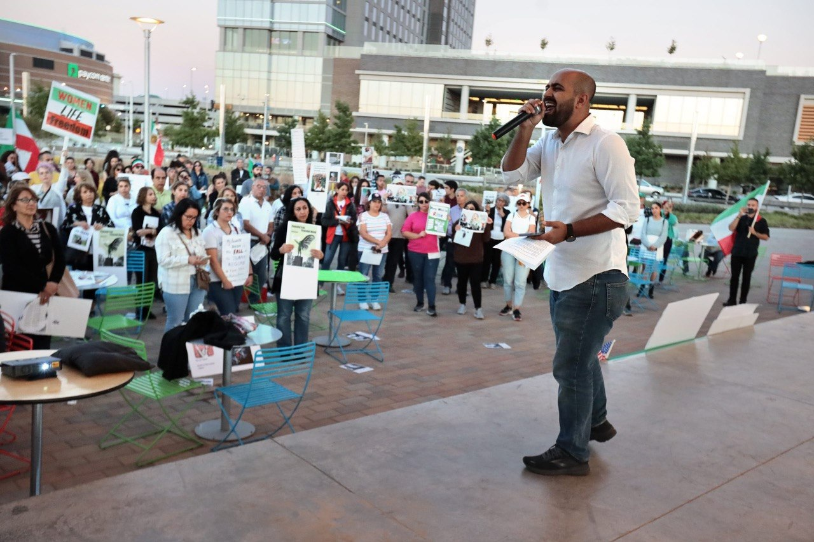
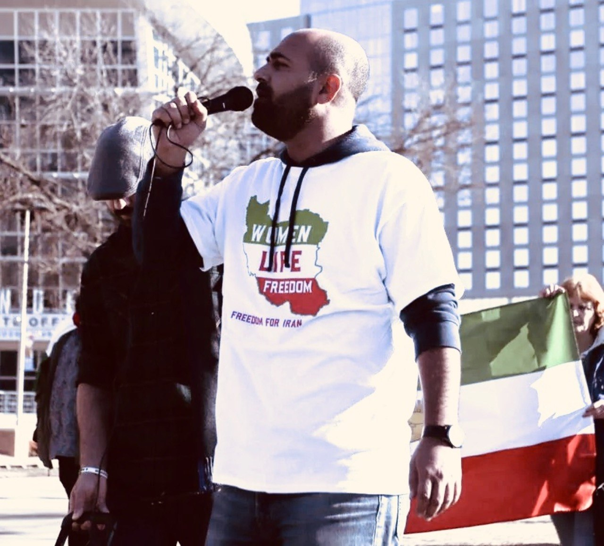

An academic journey from Tehran to Tulsa

Peyman Hekmatpour's academic story begins not in a sociology seminar, but in the lecture halls of one of Iran's most prestigious engineering schools. At Amirkabir University of Technology in Tehran, known widely as the Tehran Polytechnic, he pursued a Bachelor of Science in Material Science, training in the kind of rigorous quantitative reasoning that would later become the methodological backbone of his social science research.
But something was pulling him in a different direction. The questions that felt most urgent to him were not about systems or structures in the abstract, but about the people within them. Why are societies organized the way they are? Who benefits, and who gets left behind? Campus life in Tehran was alive with political debate, student organizing, and a deep hunger to understand the forces shaping an entire generation. For Peyman, the classroom and the street were never entirely separate.

The pivot came at graduate school. Peyman made a deliberate and, at the time, unconventional choice: to leave engineering behind and pursue a Master of Arts in Social Science Research at the University of Tehran, one of the oldest and most distinguished universities in the region. The shift was not a rejection of quantitative thinking, but a redirection of it. He brought with him a mathematician's instinct for precision and a growing conviction that the most consequential problems, inequality, power, social change, were ones sociology was best equipped to address.
His graduate work in Tehran planted the seeds of the research agenda he would later develop in the United States. He was drawn early to the intersection of culture and material conditions, to the way religion, politics, and economics entangle in shaping people's lives and life chances. He also translated academic texts on universities and neoliberalism for Iranian student audiences, a quiet but meaningful act of intellectual bridging between the global left and the Iranian student movement. These years deepened both his political consciousness and his conviction that scholarly work and civic engagement belong together.

In 2016, Peyman arrived in Norman, Oklahoma, to begin his PhD in Sociology at the University of Oklahoma. It was a long way from Tehran, geographically, culturally, and in some ways intellectually, but the core questions he had carried with him from Iran remained. How do global economic structures reproduce inequality across nations? What role does culture, and particularly religion, play in shaping attitudes toward the environment and political change? And how can quantitative methods be deployed with enough precision to actually answer these questions?

At OU, he found the tools and the scholarly community to pursue those questions seriously. He developed expertise in advanced econometric modeling, hierarchical linear models, structural equation modeling, and comparative cross-national analysis, building datasets and designing studies that spanned dozens of countries and decades of data. In 2019, he was recognized as the Outstanding Doctoral Student of the Year by the OU Department of Sociology, a reflection not just of his research productivity but of the rigor and originality he brought to the work.
His dissertation, completed with support from the Nancy L. Mergler Dissertation Completion Fellowship, examined global environmental inequality through the lens of ecologically unequal exchange theory, tracing how the structure of international trade shapes the distribution of pollution-related mortality across 169 countries. It was published in Environmental Research in 2022.

Commencement in 2022 marked the culmination of six years of sustained work, but also a beginning. The doctoral hood placed around Peyman's shoulders at the ceremony carried the crimson and cream of the University of Oklahoma, colors that had come to mean something real: a community of scholars, a set of intellectual commitments, and a responsibility to carry that work forward.

Standing on the OU campus in full regalia, near the stone that reads "The Spirit of Learning is a Lasting Frontier," he was also looking ahead. The questions that had brought him from Tehran to Norman were not finished questions. They were opening ones.

Throughout his years at OU and beyond, Peyman has never seen his scholarly work as separate from civic engagement. In November 2019, as protests erupted across Iran following a sudden 300 percent increase in fuel prices and the government's shutdown of the internet, he helped organize a solidarity rally on the OU campus, one of the first public acts of support for Iranian protesters in Oklahoma. "We don't know what is happening inside the country," he said at the time, reflecting the anxiety of a diaspora cut off from home.

In 2022, when the killing of Mahsa Amini sparked a nationwide uprising in Iran under the slogan "Woman, Life, Freedom," Peyman was again among the organizers, bringing demonstrators together in Oklahoma City. His voice as an Iranian academic gave local and national media a grounded perspective on events unfolding thousands of miles away, and he was interviewed by television outlets covering the protests in Oklahoma.

His activism has continued in the years since. Speaking at rallies and to media, including at a protest near the Oklahoma City National Memorial, he has consistently used his platform to draw attention to the human cost of political repression in Iran. "The government is cracking down on professors with an iron fist," he told reporters at one such event. "They are killing protesters on the streets."

This activism is not peripheral to his academic identity. It is continuous with it. His research on global inequality, environmental burden-sharing, and the political economy of development is animated by the same moral urgency that brings him to the streets of Norman and Oklahoma City.
In January 2023, Peyman joined the Department of Sociology at Oklahoma State University's Tulsa campus as a Teaching Assistant Professor, a position he continues to hold. The Tulsa campus serves a diverse, working-class urban student population, many of them first-generation college students, many of them working adults balancing coursework with jobs and families. Teaching there is not an abstraction. It is a daily encounter with the very social realities his research tries to illuminate.
He has built a teaching portfolio spanning quantitative methods, social stratification, racial and ethnic relations, environmental sociology, and more, taught across online, hyflex, and face-to-face formats. He continues to teach as an adjunct at the University of Oklahoma, where he teaches graduate courses in applied regression analysis, multivariate statistics, ethics in statistical practice, and database design. In 2024, he received the Advancing Undergraduate Research and Creative Activity (AURCA) Award from OSU for his mentorship of undergraduate students in original research projects.
His current research continues to push the boundaries of comparative global sociology. One project examines ecologically unequal exchange at the subnational level, mapping how trade structures shape air pollution mortality within and across countries. Another investigates how foreign direct investment network position shapes countries' capacity to adapt to climate change. Outside the academy, he is involved in the Iranian-American community in Oklahoma, working on initiatives to support cultural connection, civic engagement, and resources for Iranian students on F-1 visas.
The thread running through all of it, from engineering in Tehran to sociology in Tulsa, is a commitment to understanding how the world is organized and to using that understanding in the service of something larger than any single career or project.